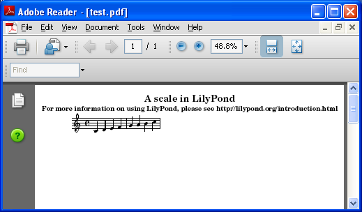

Windows
Note: LilyPond は テキスト ベース の楽譜作成プログラムです。グラフィカルな楽譜編集プログラムよりも、むしろプログラミング言語に似ています。LilyPond をダウンロードする前に、テキスト入力 を読んでください。
パッケージ
ダウンロード
-
 Windows: LilyPond 2.18.2-1
Windows 2000, XP, Vista, Windows 7 それに 8 用
Windows: LilyPond 2.18.2-1
Windows 2000, XP, Vista, Windows 7 それに 8 用
インストール
- ダウンロードしたファイルをダブルクリックして、インストールを開始してください。インストーラの指示に従ってインストールしてください。すべてのインストール オプションにチェックを入れて、デフォルトのインストール場所にインストールすることをお勧めします。インストールが完了したら、‘Finish’ ボタンをクリックしてください。これで LilyPond はインストールされています。
アンインストール
アンインストールする方法は 2 つあります –
- スタート メニューから LilyPond を選択し、そこから “Uninstall” アイコンをクリックしてください。アンインストールが完了したら、‘Finish’ ボタンをクリックしてください。
- あるいは、コントロール パネルの “プログラムの追加と削除” を開き、LilyPond までスクロールして、“削除” ボタンをクリックしてください。
コマンドラインから実行する
Note: GUI 環境の方を好むのであれば、以下の説明は無視してください。
Windows のコマンドライン
LilyPond を実行する最も簡便な方法は、LilyPond 実行可能のファイルを保持しているフォルダを、環境変数 “Path” に追加することです。
- コントロール パネルの “システム” を開き、“詳細設定” タブを選択し、“環境変数” ボタンをクリックします。
-
“システム環境変数” リストから変数 “Path” を選択し、編集ボタンをクリックします。“システム変数の編集” というタイトルのウィンドウが表示されます。“変数値” の最後に、LilyPond の実行可能ファイルを保持しているフォルダを、以下のように付け加えます:
[既存の Path];DIR\LilyPond\usr\bin
Note: DIR は、一般的に 64 bit システムでは
C:\Program Files (x86)、32 bit システムではC:\Program Filesです。“OK” ボタンをクリックしてウィンドウを閉じます。
個々の実行可能ファイルを呼び出す
lilypond, lilypond-book, convert-ly などの LilyPond 実行可能ファイルをコマンドラインから呼び出すことによって、実行することができます:
lilypond test.ly
ファイルをコンパイルする
Note: 以下の説明は、あなたがビルトイン LilyPad エディタを使用していると仮定しています。 より簡単な編集手段 で記述されているプログラムを使用している場合、ファイルのコンパイルで何か問題に遭遇した時はそのプログラムのドキュメントを調べてください。
ステップ 1. ‘.ly’ ファイルを作成する
デスクトップ上の LilyPond アイコンをクリックして、見本のファイルを開きます。

見本ファイルの上端に表示されるメニューから
ファイル > 名前を付けて保存 を選択します。ファイル > 保存 を使用しないでください。なぜならファイルに有効な LilyPond ファイル名を付けるまで、上書き保存は機能しないからです。

ファイル名を決めます。例えば ‘test.ly’ とします。

ステップ 2. コンパイルする
LilyPond ファイルを楽譜にするためには、コンパイルする必要があります。これにはいくつかの方法があります。 – ドラッグ＆ドロップ、右クリック、ダブルクリック、コマンドライン（コマンドプロンプト）です。最初の 3 種類を見てみましょう。
1. ファイルを LilyPond アイコンに直接ドラッグ＆ドロップします。

何も起こらないように見えますが、しばらくすると、デスクトップに 2 つの新しいファイル – ‘test.log’ と ‘test.pdf’ – が表示されるはずです。
2. ファイルを右クリックして、ポップアップ メニューから
Generate PDF を選択します。

3. あるいは、ただ単に ‘test.ly’ をダブルクリックします。
ステップ 3. 出力を閲覧する
‘test.pdf’ は ‘test.ly’ ファイルの譜刻結果を保持しています。ダブルクリックすると、PDF ビュアーで開かれます。
その他のコマンド
新しくファイルを作成するには、以前に作成したファイルのウィンドウから
ファイル > 新規作成 を選択します。あるいは ファイル > 開く を選択し、以前に保存したファイルを開いて編集します。または、ファイルを右クリックして Edit Source を選択しても、編集することができます。

コンパイルを行う前にあなたが新たに行った編集を保存する必要があります。PDF ファイルが作成されない場合は、コンパイルの過程で作成されるログ ファイルでエラーをチェックしてください。

このログ ファイルは、LilyPond ファイルをコンパイルする度に上書きされます。
PDF ファイルを PDF ビュアーで閲覧している場合、 新たにコンパイルを行う前に閉じる必要があります。なぜなら、閲覧されている間は新たに PDF ファイルを作成するのに失敗する可能性があるからです。

法律用語
すべてのロゴと製品イメージには著作権があり、商標登録されています。
The “four colored rectangles image” is not a registered trademark. It was created by Rohitbd and placed under the GNU Free Documentation License version 1.2. We found the image on this Wikimedia Commons page.